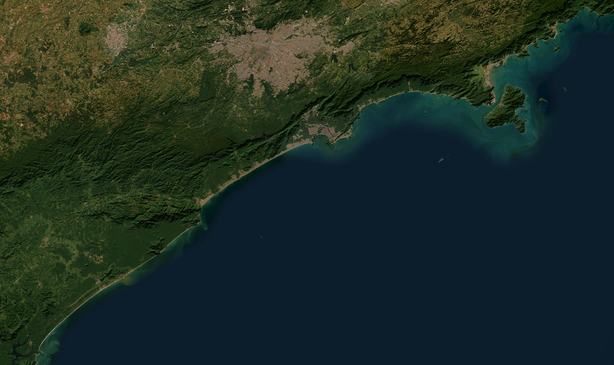
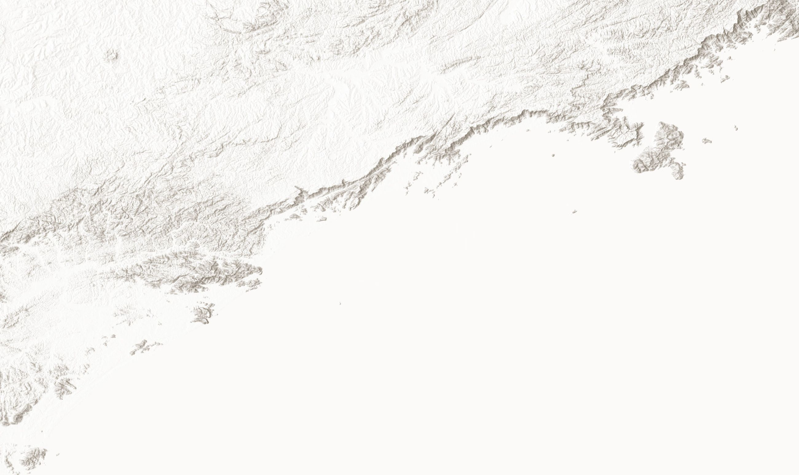

Municípios monitorados
—
—
Carregando dados do litoral...
Consultando a API do Algamar
Municípios monitorados
—
—
Alertas Algas tóxicas
—
—
Risco alto de floração Qualquer alga
—
—
Nível de floração Qualquer alga
—
na maior parte do litoral

Condições atuais
—
Carregando clima...


Nenhum ponto retornado pela API para os filtros atuais.
Carregando pontos do mapa...
Floração · qualquer alga